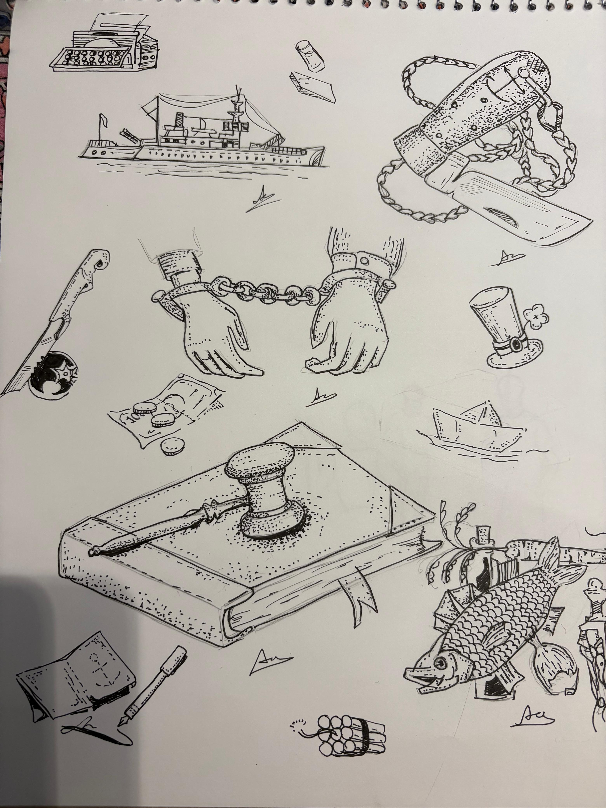
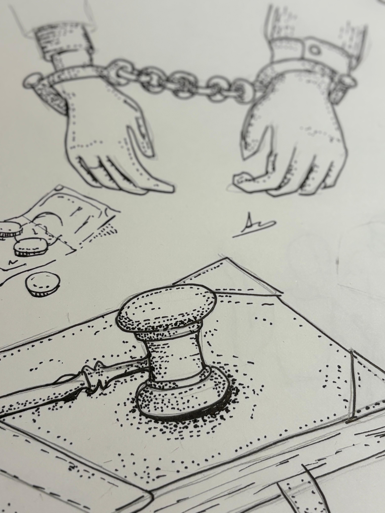
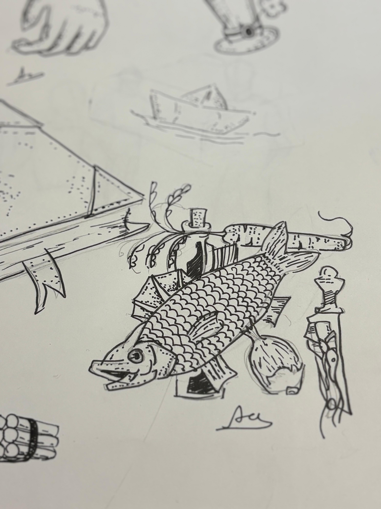
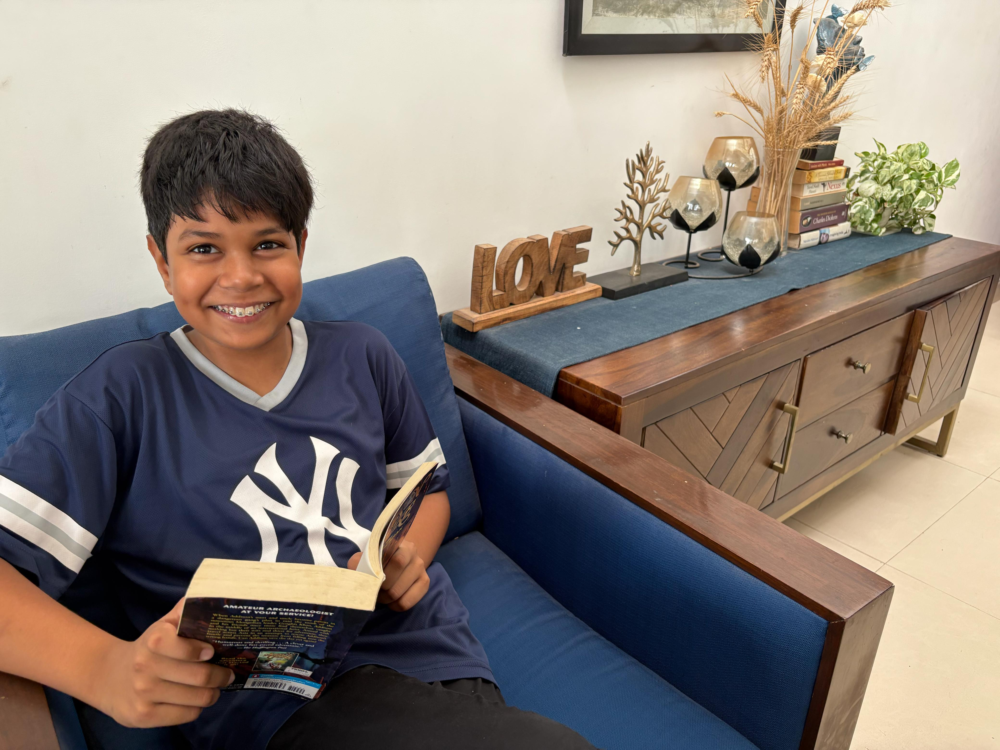

Please use the guide below to solve the riddle depicted in the pictures below!
BLADE WITH ROPE: A weapon used by pirates on the high seas. SHIP: A farewell to dull safety and the arrival of adventure. HANDCUFFS: Justice being served, but not always in a court or in front of juries. NOTES AND COINS: Worthless monetary value. GAVEL ON TOP OF LAW VOLUME: Exaggerated authority of the court. HAT WITH FOUR-LEAF CLOVER: Undeserved stroke of luck. FISH, CARROTS, SHRIMP AND OIL: Symbolise how something raw can turn into something good and fantastic with hard work. DYNAMITE: The beginning of the end. KNIFE SLICING A TOMATO: The duty of a person should always be fulfilled, no matter who they are. TYPEWRITER: The imagination of people in older generations. PAPER-BOAT: Showcases a child’s freedom. PEN AND NOTEBOOK: Showcases the art of putting ink on paper to express yourself.




Advik Mukherjee is a passionate reader and a middle school student at Matrikiran, Gurugram. He loves reading murder mystery books, painting, and watching sci-fi thriller movies. His motto is "Hope for the best, prepare for the worst.” He loves hanging out with my family and friends. He enjoys meetings at his secret mystery club.